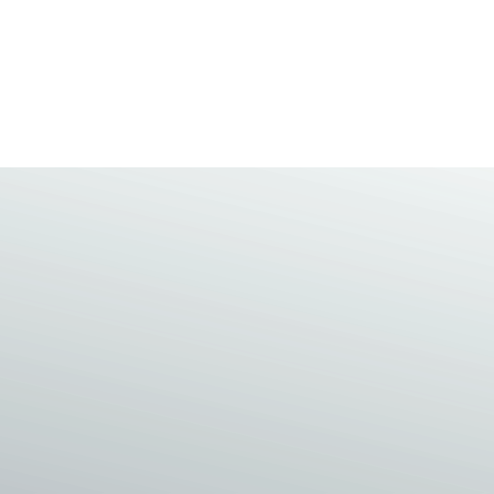
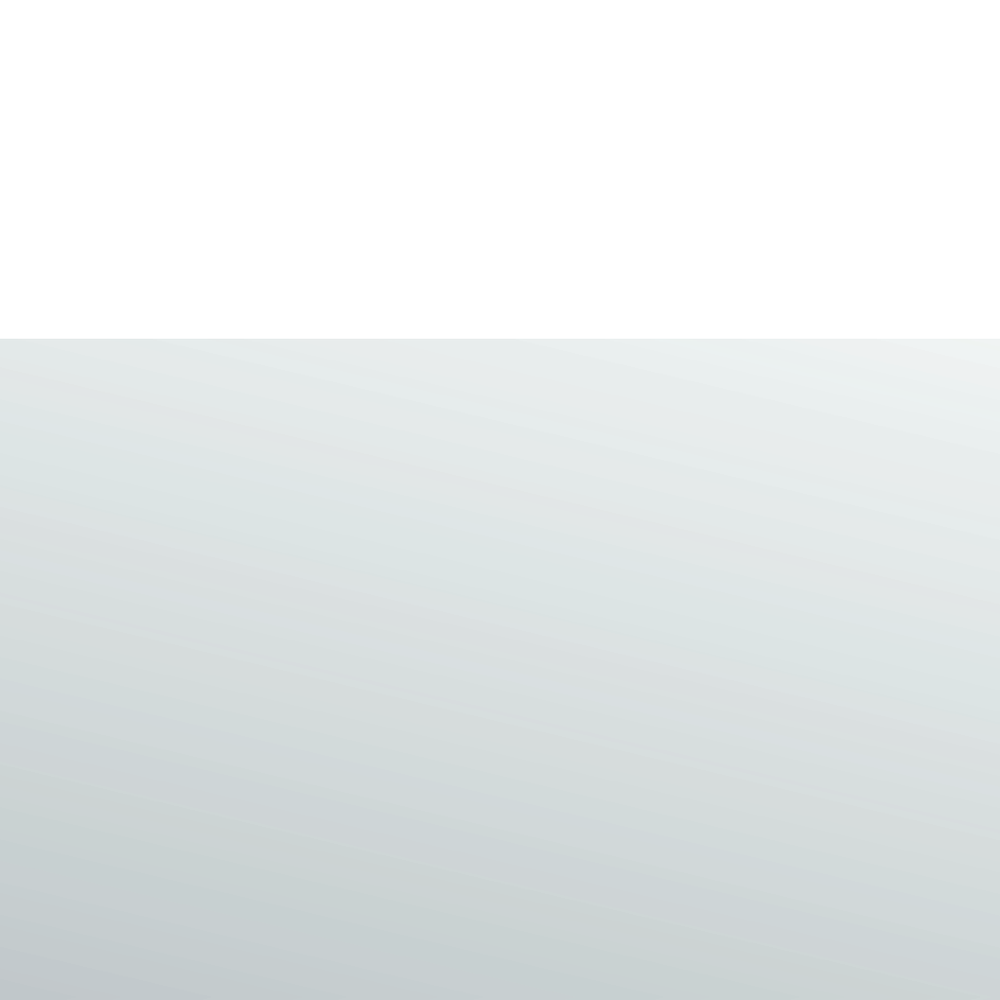

TCP/2017
tschunk cyber party
Was?
#zaunei2017 — die Tschunk Cyber Party:Nach der #zaunei2016 folgt nun die neue, abgecyberte Version der beliebten Party!
Mit Musik von CouchSofa und dnc.
Und mit Noms von ak7ways.
Außerdem mit Tschunk gemixt von Zaunei persönlich.
Wann?
14.10.2017 ab 16:00Wo?
In den Räumen von Chaos inKL.Anmeldung?
Vorherige Anmeldung hilft uns beim Planen.Der Eintritt zur #zaunei2017 ist frei.
Eine Spende in Höhe von 5€ wird empfohlen.
Impressum
Musik: Aus
Now Playing: Interlude by Herr Doktor (CC-BY-SA-NC)